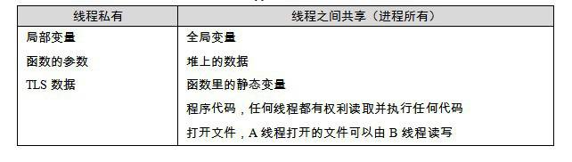

11.3 執行庫與多執行緒
11.3.1 CRT的多執行緒困擾
執行緒的訪問許可權
執行緒的訪問能力非常自由，它可以訪問程式記憶體裡的所有資料，甚至包括其他執行緒的堆疊（如果它知道其他執行緒的堆疊地址，然而這是很少見的情況），但實際運用中執行緒也擁有自己的私有儲存空間，包括：
棧（盡管並非完全無法被其他執行緒訪問，但一般情況下仍然可以認為是私有的資料）。
執行緒區域性儲存（Thread Local Storage, TLS）。執行緒區域性儲存是某些作業系統為執行緒單獨提供的私有空間，但通常只具有很有限的尺寸。
暫存器（包括PC暫存器），暫存器是執行流的基本資料，因此為執行緒私有。
從C程式設計師的角度來看，資料線上程之間是否私有如表11-3所示。

多執行緒執行庫
現有版本的C/C++標準（特指C++03、C89、C99）對多執行緒可以說只字不提，因此相應的C/C++執行庫也無法針對執行緒提供什麼幫助，也就是說在執行庫裡不能找到關於建立、結束、同步執行緒的函式。對於C/C++標準庫來說，執行緒相關的部分是不屬於標準庫的內容的，它跟網路、圖形影象等一樣，屬於標準庫之外的系統相關庫。由於多執行緒在現代的程式設計中佔據非常重要的地位，主流的C執行庫在設計時都會考慮到多執行緒相關的內容。這裡我們所說的“多執行緒相關”主要有兩個方面，一方面是提供那些多執行緒操作的介面，比如建立執行緒、退出執行緒、設定執行緒優先順序等函式介面；另外一方面是C執行庫本身要能夠在多執行緒的環境下正確執行。
對於第一方面，主流的CRT都會有相應的功能。比如Windows下，MSVC CRT提供了諸如_beginthread()、_endthread()等函式用於執行緒的建立和退出；而Linux下，glibc也提供了一個可選的執行緒庫pthread（POSIX Thread），它提供了諸如pthread_create()、pthread_exit()等函式用於執行緒的建立和退出。很明顯，這些函式都不屬於標準的執行庫，它們都是平台相關的。
對於第二個方面，C語言執行庫必須支援多執行緒的環境，這是什麼意思呢？實際上，最初CRT在設計的時候是沒有考慮多執行緒環境的，因為當時根本沒有多執行緒這樣的概念。到後來多執行緒在程式中越來越普及，C/C++執行庫在多執行緒環境下吃了不少苦頭。例如：
（1）errno：在C標準庫裡，大多數錯誤程式碼是在函式返回之前賦值在名為errno的全域性變數裡的。多執行緒並發的時候，有可能A執行緒的errno的值在獲取之前就被B執行緒給覆蓋掉，從而獲得錯誤的出錯資訊。
（2）strtok()等函式都會使用函式內部的區域性靜態變數來儲存字串的位置，不同的執行緒呼叫這個函式將會把它內部的區域性靜態變數弄混亂。
（3）malloc/new與free/delete：堆分配/釋放函式或關鍵字在不加鎖的情況下是執行緒不安全的。由於這些函式或關鍵字的呼叫十分頻繁，因此在保證執行緒安全的時候顯得十分繁瑣。
（4）異常處理：在早期的C++執行庫裡，不同的執行緒丟擲的異常會彼此衝突，從而造成資訊丟失的情況。
（5）printf/fprintf及其他IO函式：流輸出函式同樣是執行緒不安全的，因為它們共享了同一個控制台或檔案輸出。不同的輸出並發時，資訊會混雜在一起。
（6）其他執行緒不安全函式：包括與訊號相關的一些函式。
通常情況下，C標準庫中在不進行執行緒安全保護的情況下自然地具有執行緒安全的屬性的函式有（不考慮errno的因素）：
（1）字元處理（ctype.h），包括isdigit、toupper等，這些函式同時還是可重入的。
（2）字串處理函式（string.h），包括strlen、strcmp等，但其中涉及對引數中的陣列進行寫入的函式（如strcpy）僅在引數中的陣列各不相同時可以並發。
（3）數學函式（math.h），包括sin、pow等，這些函式同時還是可重入的。
（4）字串轉整數/浮點數（stdlib.h），包括atof、atoi、atol、strtod、strtol、strtoul。
（5）獲取環境變數（stdlib.h），包括getenv，這個函式同時還是可重入的。
（6）變長陣列輔助函式（stdarg.h）。
（7）非區域性跳轉函式（setjmp.h），包括setjmp和longjmp，前提是longjmp僅跳轉到本執行緒設定的jmpbuf上。
為瞭解決C標準庫在多執行緒環境下的窘迫處境，許多編譯器附帶了多執行緒版本的執行庫。在MSVC中，可以用/MT或/MTd等引數指定使用多執行緒執行庫。
11.3.2 CRT改進
使用TLS
多執行緒執行庫具有什麼樣的改進呢？首先，errno必須成為各個執行緒的私有成員。在glibc中，errno被定義為一個宏，如下：
#define errno (*__errno_location ())
函式__errno_location在不同的庫版本下有不同的定義，在單執行緒版本中，它僅直接返回了全域性變數errno的地址。而在多執行緒版本中，不同執行緒呼叫__errno_location返回的地址則各不相同。在MSVC中，errno同樣是一個宏，其實現方式和glibc類似。
加鎖
在多執行緒版本的執行庫中，執行緒不安全的函式內部都會自動地進行加鎖，包括malloc、printf等，而異常處理的錯誤也早早就解決了。因此使用多執行緒版本的執行庫時，即使在malloc/new前後不進行加鎖，也不會出現並發衝突。
改進函式呼叫方式
C語言的執行庫為了支援多執行緒特性，必須做出一些改進。一種改進的辦法就是修改所有的執行緒不安全的函式的引數列表，改成某種執行緒安全的版本。比如MSVC的CRT就提供了執行緒安全版本的strtok()函式：strtok_s，它們的原型如下：
char *strtok(char *strToken, const char *strDelimit ); char *strtok_s( char *strToken, const char *strDelimit, char **context);
改進後的strtok_s增加了一個引數，這個引數context是由呼叫者提供一個char*指標，strtok_s將每次呼叫後的字串位置儲存在這個指標中。而之前版本的strtok函式會將這個位置儲存在一個函式內部的靜態區域性變數中，如果有多個執行緒同時呼叫這個函式，有可能出現衝突。與MSVC CRT類似，Glibc也提供了一個執行緒安全版本的strtok()叫做strtok_r()。
但是很多時候改變標準庫函式的做法是不可行的。標準庫之所以稱之為“標準”，就是它具有一定的權威性和穩定性，不能隨意更改。如果隨意更改，那麼所有遵循該標準的程式都需要重新進行修改，這個“標準”是不是值得遵循就有待商榷了。所以更好的做法是不改變任何標準庫函式的原型，只是對標準庫的實現進行一些改進，使得它能夠在多執行緒的環境下也能夠順利執行，做到向後相容。
11.3.3 執行緒區域性儲存實現
很多時候，開發者在編寫多執行緒程式的時候都希望儲存一些執行緒私有的資料。我們知道，屬於每個執行緒私有的資料包括執行緒的棧和當前的暫存器，但是這兩種儲存都是非常不可靠的，棧會在每個函式退出和進入的時候被改變；而暫存器更是少得可憐，我們不可能拿暫存器去儲存所需要的資料。假設我們要線上程中使用一個全域性變數，但希望這個全域性變數是執行緒私有的，而不是所有執行緒共享的，該怎麼辦呢？這時候就需要用到執行緒區域性儲存（TLS，Thread Local Storage）這個機制了。TLS的用法很簡單，如果要定義一個全域性變數為TLS型別的，只需要在它定義前加上相應的關鍵字即可。對於GCC來說，這個關鍵字就是__thread，比如我們定義一個TLS的全域性整型變數：
很多時候，開發者在編寫多執行緒程式的時候都希望儲存一些執行緒私有的資料。我們知道，屬於每個執行緒私有的資料包括執行緒的棧和當前的暫存器，但是這兩種儲存都是非常不可靠的，棧會在每個函式退出和進入的時候被改變；而暫存器更是少得可憐，我們不可能拿暫存器去儲存所需要的資料。假設我們要線上程中使用一個全域性變數，但希望這個全域性變數是執行緒私有的，而不是所有執行緒共享的，該怎麼辦呢？這時候就需要用到執行緒區域性儲存（TLS，Thread Local Storage）這個機制了。TLS的用法很簡單，如果要定義一個全域性變數為TLS型別的，只需要在它定義前加上相應的關鍵字即可。對於GCC來說，這個關鍵字就是__thread，比如我們定義一個TLS的全域性整型變數：
__thread int number;
對於MSVC來說，相應的關鍵字為__declspec(thread)：
__declspec(thread) int number;
在Windows Vista和2008之前的作業系統，如果TLS的全域性變數被定義在一個DLL中，並且該DLL是使用LoadLibrary()顯式載入的，那麼該全域性變數將無法使用，如果訪問該全域性變數將會導致程式發生保護錯誤。導致這個情況的主要原因是在Windows Vista之前的作業系統下，DLL在使用LoadLibrary()載入時無法正確初始化由__declspec(thread)定義的變數，具體請參照MSDN。
一旦一個全域性變數被定義成TLS型別的，那麼每個執行緒都會擁有這個變數的一個副本，任何執行緒對該變數的修改都不會影響其他執行緒中該變數的副本。
Windows TLS的實現
對於Windows系統來說，正常情況下一個全域性變數或靜態變數會被放到“.data”或“.bss”段中，但當我們使用__declspec(thread)定義一個執行緒私有變數的時候，編譯器會把這些變數放到PE檔案的“.tls”段中。當系統啟動一個新的執行緒時，它會從程式的堆中分配一塊足夠大小的空間，然後把“.tls”段中的內容複製到這塊空間中，於是每個執行緒都有自己獨立的一個“.tls”副本。所以對於用__declspec(thread)定義的同一個變數，它們在不同執行緒中的地址都是不一樣的。
我們知道對於一個TLS變數來說，它有可能是一個C++的全域性物件，那麼每個執行緒在啟動時不僅僅是複製“.tls”的內容那麼簡單，還需要把這些TLS物件初始化，必須逐個地呼叫它們的全域性建構函式，而且當執行緒退出時，還要逐個地將它們析構，正如普通的全域性物件在程式啟動和退出時都要構造、析構一樣。
Windows PE檔案的結構中有個叫資料目錄的結構，我們在第2部分已經介紹過了。它總共有16個元素，其中有一元素下標為IMAGE_DIRECT_ENTRY_TLS，這個元素中儲存的地址和長度就是TLS表（IMAGE_TLS_DIRECTORY結構）的地址和長度。TLS表中儲存了所有TLS變數的建構函式和解構函式的地址，Windows系統就是根據TLS表中的內容，在每次執行緒啟動或退出時對TLS變數進行構造和析構。TLS表本身往往位於PE檔案的“.rdata”段中。
另外一個問題是，既然同一個TLS變數對於每個執行緒來說它們的地址都不一樣，那麼執行緒是如何訪問這些變數的呢？其實對於每個Windows執行緒來說，系統都會建立一個關於執行緒資訊的結構，叫做執行緒環境塊（TEB，Thread Environment Block）。這個結構裡面儲存的是執行緒的堆疊地址、執行緒ID等相關資訊，其中有一個域是一個TLS陣列，它在TEB中的偏移是0x2C。對於每個執行緒來說，x86的FS段暫存器所指的段就是該執行緒的TEB，於是要得到一個執行緒的TLS陣列的地址就可以透過FS:[0x2C]訪問到。
TEB這個結構不是公開的，它可能隨著Windows版本的變化而變化，我們這裡所說的TEB結構都是指在x86版的Windows XP。
這個TLS陣列對於每個執行緒來說大小是固定的，一般有64個元素。而TLS陣列的第一個元素就是指向該執行緒的“.tls”副本的地址。於是要得到一個TLS的變數地址的步驟為：首先透過FS:[0x2C]得到TLS陣列的地址，然後根據TLS陣列的地址得到“.tls”副本的地址，然後加上變數在“.tls”段中的偏移即該TLS變數線上程中的地址。下面看一個簡單的例子：
__declspec(thread) int t = 1;
int main()
{
t = 2;
return 0;
}
經過編譯以後，這段程式碼的組譯實現如下：
_main:
00000000: 55 push ebp
00000001: 8B EC mov ebp,esp
00000003: A1 00 00 00 00 mov eax,dword ptr [__tls_index]
00000008: 64 8B 0D 00 00 00 mov ecx,dword ptr fs:[__tls_array]
00
0000000F: 8B 14 81 mov edx,dword ptr [ecx+eax*4]
00000012: C7 82 00 00 00 00 mov dword ptr _t[edx],2
02 00 00 00
0000001C: 33 C0 xor eax,eax
0000001E: 5D pop ebp
0000001F: C3 ret
程式碼中有兩個符號__tls_index和__tls_array，它們被定義在MSVC CRT中，對於MSVC 2008來說，它們的值分別是0和0x2C，分別表示TLS陣列下的第一個元素和TLS陣列在TEB中的偏移。由於這兩個數值有可能隨著Windows系統的變化而變化，所以它們被儲存在CRT中，如果程式以DLL方式連結，那麼在不同版本的Windows平台上執行就不會有問題；如果是靜態連結，那麼當新版的Windows更改TEB結構時而導致TLS陣列在TEB中的偏移改變，程式執行就可能出錯。當然出於Windows多年來的“良好表現”，這種隨意更改核心資料結構的事情發生的可能性還是比較小的。
顯式TLS
前面提到的使用__thread或__declspec(thread)關鍵字定義全域性變數為TLS變數的方法往往被稱為隱式TLS，即程式設計師無須關心TLS變數的申請、分配賦值和釋放，編譯器、執行庫還有作業系統已經將這一切悄悄處理妥當了。在程式設計師看來，TLS全域性變數就是執行緒私有的全域性變數。相對於隱式TLS，還有一種叫做顯式TLS的方法，這種方法是程式設計師需要手工申請TLS變數，並且每次訪問該變數時都要呼叫相應的函式得到變數的地址，並且在訪問完成之後需要釋放該變數。在Windows平台上，系統提供了TlsAlloc()、TlsGetValue()、TlsSetValue()和TlsFree()這4個API函式用於顯式TLS變數的申請、取值、賦值和釋放；Linux下相對應的庫函式為pthread庫中的pthread_key_create()、pthread_getspecific()、pthread_setspecific()和pthread_key_delete()。
前面提到的使用__thread或__declspec(thread)關鍵字定義全域性變數為TLS變數的方法往往被稱為隱式TLS，即程式設計師無須關心TLS變數的申請、分配賦值和釋放，編譯器、執行庫還有作業系統已經將這一切悄悄處理妥當了。在程式設計師看來，TLS全域性變數就是執行緒私有的全域性變數。相對於隱式TLS，還有一種叫做顯式TLS的方法，這種方法是程式設計師需要手工申請TLS變數，並且每次訪問該變數時都要呼叫相應的函式得到變數的地址，並且在訪問完成之後需要釋放該變數。在Windows平台上，系統提供了TlsAlloc()、TlsGetValue()、TlsSetValue()和TlsFree()這4個API函式用於顯式TLS變數的申請、取值、賦值和釋放；Linux下相對應的庫函式為pthread庫中的pthread_key_create()、pthread_getspecific()、pthread_setspecific()和pthread_key_delete()。
顯式的TLS實現其實非常簡單，我們前面提到過TEB結構中有個TLS陣列。實際上顯式的TLS就是使用這個陣列儲存TLS資料的。由於TLS陣列的元素數量固定，一般是64個，於是顯式TLS在實現時如果發現該陣列已經被使用完了，就會額外申請4096個位元組作為二級TLS陣列，使得在WindowsXP下最多能擁有1088（1024+64）個顯式TLS變數（當然隱式的TLS也會佔用TLS陣列）。相對於隱式的TLS變數，顯式的TLS變數的使用十分麻煩，而且有諸多限製，顯式TLS的諸多缺點已經使得它越來越不受歡迎了，我們並不推薦使用它。
Q&A: CreateThread()和_beginthread()有什麼不同
我們知道在Windows下建立一個執行緒的方法有兩種，一種就是呼叫Windows API CreateThread()來建立執行緒；另外一種就是呼叫MSVC CRT的函式_beginthread()或_beginthreadex()來建立執行緒。相應的退出執行緒也有兩個函式Windows API的ExitThread()和CRT的_endthread()。這兩套函式都是用來建立和退出執行緒的，它們有什麼區別呢？
很多開發者不清楚這兩者之間的關係，他們隨意選一個函式來用，發現也沒有什麼大問題，於是就忙於解決更為緊迫的任務去了，而沒有對它們進行深究。等到有一天忽然發現一個程式執行時間很長的時候會有細微的記憶體洩露，開發者絕對不會想到是因為這兩套函式用混的結果。
根據Windows API和MSVC CRT的關係，可以看出來_beginthread()是對CreateThread()的包裝，它最終還是呼叫CreateThread()來建立執行緒。那麼在_beginthread()呼叫CreateThread()之前做了什麼呢？我們可以看一下_beginthread()的原始碼，它位於CRT原始碼中的thread.c。我們可以發現它在呼叫CreateThread()之前申請了一個叫_tiddata的結構，然後將這個結構用_initptd()函式初始化之後傳遞給_beginthread()自己的執行緒入口函式_threadstart。_threadstart首先把由_beginthread()傳過來的_tiddata結構指標儲存到執行緒的顯式TLS陣列，然後它呼叫使用者的執行緒入口真正開始執行緒。在使用者執行緒結束之後，_threadstart()函式呼叫_endthread()結束執行緒。並且_threadstart還用__try/__except將使用者執行緒入口函式包起來，用於捕獲所有未處理的訊號，並且將這些訊號交給CRT處理。
所以除了訊號之外，很明顯CRT包裝Windows API執行緒介面的最主要目的就是那個_tiddata。這個執行緒私有的結構裡面儲存的是什麼呢？我們可以從mtdll.h中找到它的定義，它裡面儲存的是諸如執行緒ID、執行緒控制代碼、erron、strtok()的前一次呼叫位置、rand()函式的種子、異常處理等與CRT有關的而且是執行緒私有的資訊。可見MSVC CRT並沒有使用我們前面所說的__declspec(thread)這種方式來定義執行緒私有變數，從而防止庫函式在多執行緒下失效，而是採用在堆上申請一個_tiddata結構，把執行緒私有變數放在結構內部，由顯式TLS儲存_tiddata的指標。
瞭解了這些資訊以後，我們應該會想到一個問題，那就是如果我們用CreateThread()建立一個執行緒然後呼叫CRT的strtok()函式，按理說應該會出錯，因為strtok()所需要的_tiddata並不存在，可是我們好像從來沒碰到過這樣的問題。檢視strtok()函式就會發現，當一開始呼叫_getptd()去得到執行緒的_tiddata結構時，這個函式如果發現執行緒沒有申請_tiddata結構，它就會申請這個結構並且負責初始化。於是無論我們呼叫哪個函式建立執行緒，都可以安全呼叫所有需要_tiddata的函式，因為一旦這個結構不存在，它就會被建立出來。
那麼_tiddata在什麼時候會被釋放呢？ExitThread()肯定不會，因為它根本不知道有_tiddata這樣一個結構存在，那麼很明顯是_endthread()釋放的，這也正是CRT的做法。不過我們很多時候會發現，即使使用CreateThread()和ExitThread() （不呼叫ExitThread()直接退出執行緒函式的效果相同），也不會發現任何記憶體洩露，這又是為什麼呢？經過仔細檢查之後，我們發現原來密碼在CRT DLL的入口函式DllMain中。我們知道，當一個程式/執行緒開始或退出的時候，每個DLL的DllMain都會被呼叫一次，於是動態連結版的CRT就有機會在DllMain中釋放執行緒的_tiddata。可是DllMain只有當CRT是動態連結版的時候才起作用，靜態連結CRT是沒有DllMain的！這就是造成使用CreateThread()會導致記憶體洩露的一種情況，在這種情況下，_tiddata線上程結束時無法釋放，造成了洩露。我們可以用下面這個小程式來測試：
#include <Windows.h>
#include <process.h>
void thread(void *a)
{
char* r = strtok( "aaa", "b" );
ExitThread(0); // 這個函數是否調用都無所謂
}
int main(int argc, char* argv[])
{
while(1) {
CreateThread( 0, 0, (LPTHREAD_START_ROUTINE)thread, 0, 0, 0 );
Sleep( 5 );
}
return 0;
}
如果用動態連結的CRT （/MD，/MDd）就不會有問題，但是，如果使用靜態連結CRT （/MT，/MTd），執行程式後在程式管理器中觀察它就會發現記憶體用量不停地上升，但是如果我們把thread()函式中的ExitThread()改成_endthread()就不會有問題，因為_endthread()會將_tiddata()釋放。
這個問題可以總結為：當使用CRT時（基本上所有的程式都使用CRT），請盡量使用_beginthread()/_beginthreadex()/_endthread()/_endthreadex()這組函式來建立執行緒。在MFC中，還有一組類似的函式是AfxBeginThread()和AfxEndThread()，根據上面的原理類推，它是MFC層面的執行緒包裝函式，它們會維護執行緒與MFC相關的結構，當我們使用MFC類庫時，盡量使用它提供的執行緒包裝函式以保證程式執行正確。